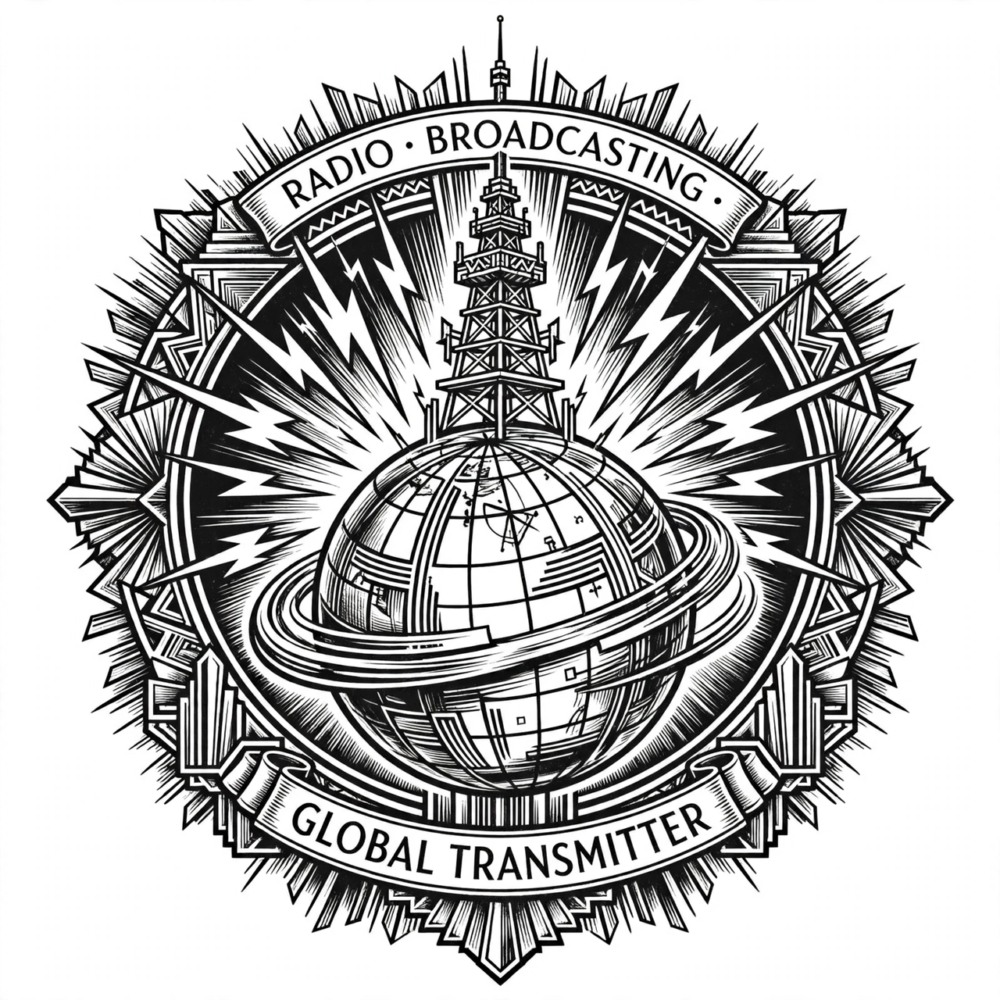

| RKO Pictures | |
|---|---|
| Industry | Film |
| Founded | 23 October 1928 (as Radio-Keith-Orpheum) |
| Defunct | 1959 (original studio; brand later revived) |
| Headquarters | New York City / Hollywood |
| Key people | David Sarnoff, Joseph P. Kennedy, Howard Hughes |
RKO Pictures, commonly called RKO (an abbreviation of its original name, Radio-Keith-Orpheum), was an American film production and distribution company, and one of the "Big Five" film studios of Hollywood's Golden Age. The business was formed in 1928 when the Radio Corporation of America (RCA) merged its film interests with the Keith-Albee-Orpheum theatre chain and Joseph P. Kennedy's Film Booking Offices of America.
RKO was created to exploit RCA's Photophone sound-on-film technology. In the 1930s the studio released King Kong (1933) and the beloved Fred Astaire–Ginger Rogers musicals, and distributed films by Walt Disney (1937–1956) and Samuel Goldwyn. Under production chief George Schaefer it gave Orson Welles creative freedom, resulting in Citizen Kane (1941) and The Magnificent Ambersons (1942). In the 1940s its B-unit under Val Lewton produced celebrated horror films such as Cat People, and the studio became a centre of film noir.
Howard Hughes acquired control in 1948; his erratic management hastened decline, and in 1955 he sold the studio to General Tire's General Teleradio. Production ceased in 1957 and the studio was dissolved as a film producer by 1959, with the Hollywood lot sold to Desilu Productions. The RKO library passed through several owners; the trademark has been revived for occasional productions.
Studio system · Metro-Goldwyn-Mayer · United States v. Paramount Pictures, Inc.